14 Phosphorus
Dr. Peter Groffman describes Hubbard Brook’s record of soil and atmospheric gas fluxes at the Bear Brook-mid Plot in the Hubbard Brook Experimental Forest on May 17, 2024.
Chapter Editors: Timothy Fahey and Ruth Yanai
14.1 Introduction
Phosphorus is an essential macronutrient in all biological systems, and can be the nutrient most limiting to biological production in many aquatic and terrestrial ecosystems. In nature, P occurs almost exclusively in the maximally oxidized phosphate form (PO4), and most organic P is in the form of phosphate esters. Thus, the biogeochemistry of P is much simpler than for N (see Nitrogen Cycling chapter), as most biochemical transformations of P involve forming or breaking ester linkages without any change of oxidation state. In cells, P acts as the energy currency through the transformation of ATP, and P is also an important component of nucleic acids (DNA and RNA) and cell membranes (phospholipids).
In Earth’s crustal rocks, P is found mostly in the form of a family of calcium phosphate minerals called apatites. Apatite is present in trace amounts in most igneous, metamorphic and sedimentary rocks. Apatite is relatively easily weathered, compared to silicates, the most common minerals in rocks, and thus the level of primary mineral P in soils declines over geologic time as soil development proceeds. Because mineral weathering is the principal source of new P input to terrestrial ecosystems, productivity of forests on old, highly weathered soils is more likely to be limited primarily by P. In contrast, P supply on younger soils, such as the glacially derived Hubbard Brook soils, should be relatively high, and nitrogen is more likely to be limiting (Walker and Syers 1976). However, decades of anthropogenic N addition in eastern North America could result in so-called transactional P limitation (Vitousek et al. 2010); indeed, observations of leaf N:P ratios and regional forest fertilization studies suggest that some northeastern U.S. forests are P limited or co-limited by N and P (Vadeboncoeur 2010). Moreover, the Multiple Element Limitation (MEL) model, applied to the northern hardwood forests at Hubbard Brook, supports the concept that young forests are more limited by N and old forests are either co-limited by N and P or are more P limited (Rastetter et al. 2013). Because the availability of P in soils is sensitive to changes in soil pH and soil organic matter content, predicting the response of forests to environmental change requires a better understanding of P biogeochemistry. Finally, many aquatic ecosystems are limited primarily by P, and eutrophication results from high P loading; hence, the transport of P from forests to linked aquatic ecosystems (streams, lakes) can play a key role in their dynamics.
14.2 Phosphorus inputs and outputs
New P is supplied to the forest ecosystem by atmospheric deposition and by primary mineral weathering in soils. Although P in soil primary minerals is essentially an ecosystem component, by convention we will specify that elements in the rocks are input to the ecosystem upon release from primary minerals. Hence, soil P in secondary minerals and organic forms is considered recycling P whereas that weathered from primary minerals is an ecosystem input. Note also that trace amounts of P are contained in dust and dry particles, and dry deposition is another input pathway.
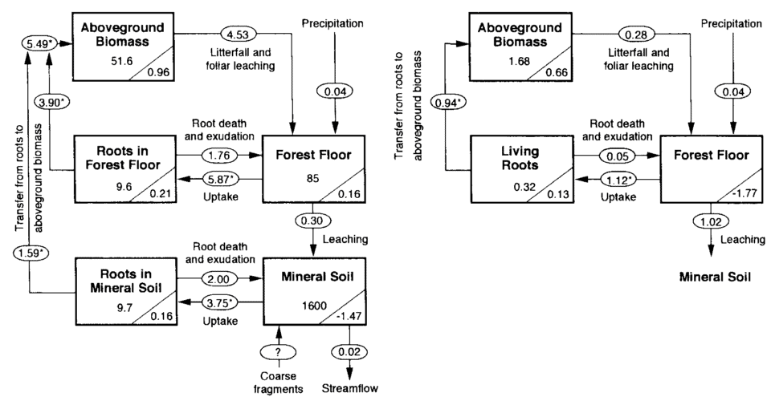
Long-term measurements of the chemistry of bulk precipitation provide the basis for estimating atmospheric input of P at HBEF. Yanai (1992) calculated atmospheric input as the product of volume-weighted annual mean P concentration (1972-1980) and average annual precipitation (1963-1980). The resulting estimate (0.04 kg P/ha-yr; Figure 14.1) is much lower than the global mean value of 0.27 kg P/ha-yr based on a recent summary (Tipping et al. 2014). This is not surprising as many regions on Earth receive much higher P deposition than the northeastern US, especially when dry deposition is included. Measurement of atmospheric deposition is complicated by the difficulty of accurately sampling deposition of particles (e.g., dust) and distinguishing whether particles are actually recycled from local sources (e.g., pollen) or are new inputs to the ecosystem (long-distance transport). Thus, although it is likely that the value for atmospheric input of P calculated from bulk deposition measurements is an underestimate, further detailed studies are needed to better evaluate this input.
In the experimental watersheds at HBEF Nezat et al. (2004) estimated weathering rates on WS1, including the modern-day rate of weathering of apatite, the principal P-containing mineral in the soil parent material. The rate of apatite weathering ranged from 0.08 to 0.22 mmol/m-2 across WS1 with the highest rate in the high-elevation spruce-fir forest zone. On a watershed-wide basis the consequent rate of P weathering from apatite is estimated at 0.29 kg P/ha-yr, several-fold greater than atmospheric deposition.
The other pathway of new P input is primary mineral weathering. The process of apatite weathering has been investigated in detail in HB soils. In surface soils (e.g. 0-20 cm) most apatite typically has been weathered from the rocks in the 15,000 years since deglaciation. Most present-day weathering is associated with mineral interfaces in contact with soil solution. About 30% of apatite in HB soils is contained within slowly weathering silicate minerals (Nezat et al. 2004). However, even this protected apatite may be susceptible to rapid weathering associated with the hyphae of ectomycorrhizal trees (Blum et al. 2002), perhaps especially in the coniferous forests where the highest apatite weathering rates are observed. More detailed study of enhanced P weathering by roots and mycorrhizal fungi is needed.
The only significant output pathway for P from the HB watersheds is via stream discharge (Figure 14.1). Although migration of animals undoubtedly removes some P, this flux is probably minor and nearly balanced by animal inputs. Based on stream dissolved P concentrations and annual discharge for the early years of the study, Likens et al. (1977) estimated dissolved P output at 0.01 kg P/ha-yr. About 70% of this dissolved P is inorganic phosphate and the rest is dissolved organic P. Additional P is lost in streamwater in particulate form. Most of this particulate P flux occurs in episodic high discharge events and is probably largely derived from stream channels. An early summary indicated that average annual particulate P transport from reference WS6 was similar in magnitude to dissolved P flux (0.01 kg P/ha; Likens et al. 1977). Careful measurements of particulate matter transport in WS6 suggest that about one-third of this flux is organic matter and about two-thirds mineral particles (Bormann et al. 1974). A summary of stream chemistry in WS6 (Likens 2013) suggests that dissolved phosphate flux has declined significantly in recent years (2000-2012) compared with the earlier interval (1973-1982; Figure 14.2). Possible causes of this change in in-stream P flux are discussed later in this Chapter.
In sum, phosphorus is very tightly cycled in the HB ecosystem. Inputs to the P cycle by primary mineral weathering and atmospheric deposition (ca. 0.35 kg P/ha-yr) greatly exceed streamwater losses (0.02) and the amount of P cycling in the forest ecosystem is gradually accumulating in the HB watersheds (Figure 14.1). Wood et al. (1984) explained that this tight cycling of P results from both biotic and geochemical mechanisms that are detailed later in this chapter.
14.3 Ecosystem Phosphorus Pools
Table 1. Phosphorus Pool Sizes (kg P ha⁻¹)
| Category | Component | Value |
|---|---|---|
| Living Biomass | Aboveground biomass | 51.6 |
| Roots in the forest floor | 9.6 | |
| Roots in the mineral soil | 9.7 | |
| Total | 70.9 | |
| Forest Floor | Available | 0.68 |
| Organic matter | 61 | |
| Primary mineral | 20 | |
| Secondary mineral | 4 | |
| Total | 85 | |
| Mineral Soil | Available | 0.13 |
| Organic matter | 540 | |
| Primary mineral | 670 | |
| Secondary mineral | 390 | |
| Total | 1600 | |
| Ecosystem Total | 1756 |
14.4 Soils
Most of the P in the HB forest ecosystem resides in the soil. Nearly half of soil P is in primary minerals (Table 1) whereas the rest of soil P has undergone ecosystem transformations and is found mostly in secondary minerals and organic compounds (Figure 14.3). These constituents are intimately mixed in mineral soil layers overlain by an organic-rich horizon, the forest floor. The measurement of total P in soil involves complete dissolution of all mineral and organic components (using HF-HClO4) and the principal constituents are estimated using various weaker digestions and extractions. For example, secondary mineral P is defined as that extractable with citrate-dithionate whereas organic P is extractable with HCl following combustion at 500oC. The secondary mineral P in acidic soils, such as those at Hubbard Brook, is formed as a result of the replacement of hydroxyl groups in iron and aluminum sesquioxides by phosphate (Parfitt and Atkinson 1976); this mechanism of secondary P mineral formation is particularly active in B horizons in HB soils (Wood et al. 1984) resulting in a large pool of secondary mineral P (Table 1). Organic P in soil includes both the relatively distinct forest floor organic matter pool as well as the much larger pool of organic matter in mineral soil horizons. Forest floor organic matter comprises only 4% of total soil P but this pool turns over relatively rapidly. The forest floor also contains small quantities of P in primary and secondary minerals (Table 1).
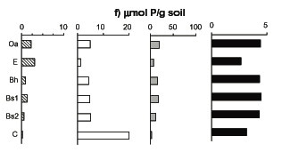
The large magnitude and high spatial variability of the soil P pools precludes direct detection of changes in pool size. Primary mineral P must be gradually declining, accompanied by increases in secondary mineral P. Repeated measurements of the forest floor horizons in WS6 generally indicated that this more dynamic pool remained nearly constant from 1977-2002; however, a significant decline in this pool has been detected between 2002-2013 (see Decomposition and Soil Sequestration chapter). Continuing measurements are needed to confirm the magnitude and temporal pattern of forest floor decline at HB and its implications for cycling of P in the forest.Traditionally, the P available for biological cycling has been defined as phosphate extractable with dilute acid, bicarbonate or ion-exchange resins. Dilute acid extractable P in HB soils is a very small pool (Table 1), generally an order of magnitude less than annual root uptake by vegetation, implying a very rapid turnover rate (Yanai 1992). However, mycorrhizae (Blum et al. 2002) and probably other soil organisms are capable of by-passing the soil dissolved phase by directly accessing P in minerals and in organic forms. This mechanism may limit the geochemical fixation of P in secondary minerals and its role in regulating ecosystem P dynamics deserves further detailed study.
14.5 Vegetation
The pool of P in living biomass of the mature forest is similar in magnitude to the forest floor (Table 1). About one-fourth of this vegetation pool is belowground, equally divided between roots in forest floor and mineral soil horizons (Figure 14.1). The P pool in vegetation is roughly equally distributed between more permanent tissues – wood, bark – and ephemeral tissues, leaves and fine roots. In the early years of the study (1965-1982), P was accumulating in the live biomass pool (ca. 1.3 kg P/ha-yr) as the 50- to 70-yr old forest aggraded. However, in recent decades (1982-2012) the vegetation P pool has been nearly constant, reflecting the unexpected levelling of forest biomass (see Forest Biomass and Productivity chapter). New measurements of plant tissue P are needed to improve current estimates of the vegetation P pool.
14.6 Internal Cycling of P
14.6.1 Root uptake
The largest P flux pathway in the ecosystem is plant root uptake, estimated by Yanai (1992) for the mature forest on WS6 at 9.6 kg P/ha-yr (Figure 14.1). Roots and mycorrhizae absorb P from both forest floor and mineral soil horizons. Yanai (1992) estimated that about 60% of plant uptake was from the forest floor, indicating much more P uptake per unit root mass than for mineral soil roots which reflects in part the more rapid turnover of forest floor than mineral soil P and perhaps more efficient root morphology (see Roots chapter). Although root uptake of P is thought to be primarily in the form of inorganic phosphate, mycorrhizae promote the mineralization of organic P sources (George et al. 1995), and as noted earlier may also directly access primary mineral P (Blum et al. 2002). The interaction between trees with ectomycorrhizal and arbuscular mycorrhizae, like the HB forest, in the acquisition of P from forest floor and mineral soil is poorly understood (see Roots chapter).
14.6.2 Mineralization of organic P
In soils, P is found in a variety of organic compounds. The conversion of organic P to inorganic, water-soluble phosphate is called P mineralization. Direct measurement of soil P mineralization is complicated by the rapid adsorption and binding of phosphate in secondary minerals, and net P mineralization is often inferred from phosphate uptake. Mineralization of P is mediated by extracellular enzymes (phosphatases) produced by soil bacteria and fungi, including mycorrhizae (Koide and Kabir 2000). Presumably, the production of phosphatase enzymes by these organisms is stimulated when P is in high demand (Carreiro et al. 2000). Conversely, increased P supply would be expected to suppress phosphatase activity, as has been observed for HB soils (Groffman and Fisk 2011; Figure 14.4). The possible effect of soil acidification on P mineralization and phosphatase activity is discussed below.
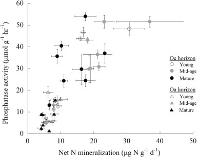
14.6.3 Foliage resorption and detrital return to soil
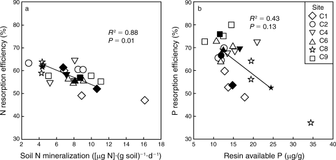
Resorption is the withdrawal of nutrients from leaves to other plant tissues prior to abscission. By avoiding the return of P to soil, trees can reduce root uptake demand and conserve this limiting nutrient. As much as 70-80% of the P in foliage is resorbed by trees in northern hardwood forests, making resorption one of the largest ecosystem P fluxes (Ryan and Bormann 1982). Presumably, the energetic cost of P resorption is counter-balanced against the benefit of reduced root uptake. Indeed, a cross-site comparison at nearby Bartlett Experimental Forest suggested that P resorption declines with increased soil P availability (Figure 14.5; See et al. 2015). In addition, long-term, low-level P additions to a suite of northern hardwood forests near HB resulted in significant decline of foliar P resorption efficiency in the dominant trees (Figure 14.13). The physiology of the process of foliar P resorption is not fully understood (e.g., transformations and transport in leaves and stem) and deserves further study. Moreover, resorption of P from fine roots, the other principal ephemeral plant tissue, is difficult to measure; some evidence suggests that minimal resorption can occur from tree fine roots (Gordon and Jackson 2000) (Figure 14.5). Foliar resorption efficiency of N and P across a soil fertility gradient of northern hardwood forests at Bartlett EF (See et al. 2015)Phosphorus that is not resorbed from foliage is returned to soil as leaf litterfall. Early measurements at Hubbard Brook (Gosz et al. 1972) indicated that tree leaves comprised nearly half of annual P flux in aboveground litterfall (1.9 kg P/ha), the rest being in other deciduous tissues (e.g., flowers, fruits; 0.8 kg P/ha), woody biomass (e.g., bark, wood; 0.9 kg P/ha) and understory vegetation (0.4 kg P/ha). Additional P is returned to soil by root mortality, estimated by Yanai (1992) at 3.5 kg P/ha-yr, about equally divided between forest floor and mineral soil horizons (Figure 14.1). Note that root uptake is estimated as the sum of returns in litterfall and accumulation in perennial tissue of growing trees.
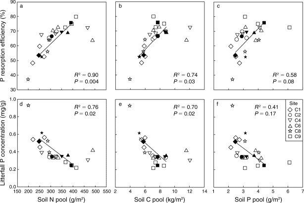
14.6.4 Soil solutions and P leaching
Water draining through different soil horizons is collected using zero-tension lysimeters and P flux from each horizon is estimated using P concentrations and modelled water flux (Yanai 1992). In general, the concentration of P in soil solutions declines with depth in soil, with the highest total P in water draining the forest floor (Figure 14.7). Recycling of P in these organic horizons is very efficient as nearly 6 kg P/ha is mineralized while only 0.3 kg P/ha (about 5%) is leached. Still, this forest floor dissolved P flux greatly exceeds soil leaching and transport to streams, because it includes root uptake, adsorption of dissolved organic P, and fixation of phosphate in secondary minerals in the soil. Notably, the concentration of total P in streams declines in a longitudinal transect along the stream in reference WS6 (Figure 14.7). This pattern probably reflects a decreasing proportional contribution of shallow soil flowpaths (which carry higher P concentrations) moving downstream through the watershed.
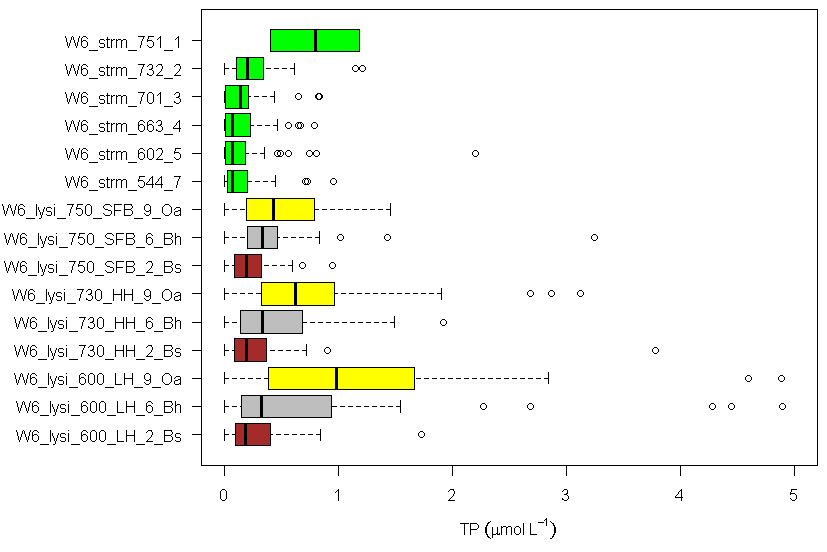
14.7 Disturbance and P Cycling
14.7.1 Forest harvest
Watershed-scale experiments at HB provide a basis for evaluating forest harvest effects on P cycling. Whole-tree harvest (WTH) of WS5 was designed to evaluate possible depletion of ecosystem nutrient stores associated with more intensive removal of aboveground biomass; for example, WTH removed five times more P than standard bole-only harvest on the adjacent WS4 (Yanai 1998). Although this removal of P was relatively small compared with the total P pool in soil (1600 kg P/ha, Figure 14.1), it was similar in magnitude to the forest floor P pool, which supplies much of the P for plant root uptake . Loss of dissolved and particulate P in streamwater increased significantly after harvest, but the losses were negligible (0.2 kg P/ha over 3 yr) in comparison to amounts cycling through the ecosystem; this effect was transient with P levels returning to reference values 4-5 years post harvest (Figure 14.2). This result is explained primarily by the high P-sorption capacity of mineral soil horizons (Yanai 1991). Most surprising was the large decline of P mineralization. Yanai (1998) calculated that net P mineralization in forest floor declined by over 3-fold in the first two years after WTH. Presumably, P mineralization could have declined because of three mechanisms: 1) reduced phosphatase production owing to decreased biotic demand, 2) end-product inhibition by increased soil solution phosphate concentrations and, 3) increased microbial immobilization of P. Further study is needed to clarify the principal mechanisms causing this response.
However, disturbances like forest harvest disrupt this synchrony. Rastetter et al. (2013) applied the MEL model to forest harvest at HB to illustrate how P should ultimately limit the rate of ecosystem recovery because of the relatively low N:P ratio of harvest residues and consequently higher relative N vs P losses. Perhaps biologically-enhanced primary mineral weathering of P is capable of overcoming such ultimate P limitation.
14.7.2 Soil acidification
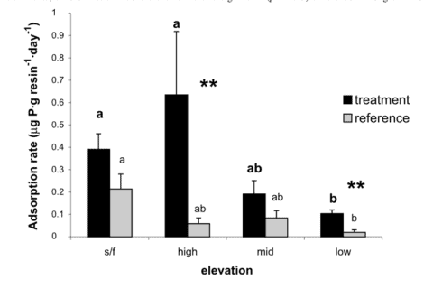
Anthropogenic activity in the 20th century (acid deposition, forest harvest) resulted in marked depletion of base cations and consequent soil acidification in eastern North America. Declining soil pH and base saturation would be expected to influence P availability and cycling especially because of higher Al and Fe concentrations in surface soils and consequent increases in fixation of P in sesquioxides. In addition, changes in pH of forest floor horizons could alter microbial communities and their activity in P mineralization. Our experimental restoration of the Ca lost during the 20th century on WS1 at HB caused a marked short-term increase in P mineralization (Figure 14.8), foliar P (Figure 14.9) and microbial biomass P in response to increased forest floor pH, suggesting that surface soil acidification may have at least temporarily reduced the rate of P cycling through the organic horizons of northern hardwood forests (Fiorentino at al. 2003). Perhaps the decline in forest floor P in WS1 and the recent more gradual decline in the reference watershed (see Decomposition and Soil Carbon Sequestration chapter) reflect the influence of increasing pH on microbial mineralization of P.
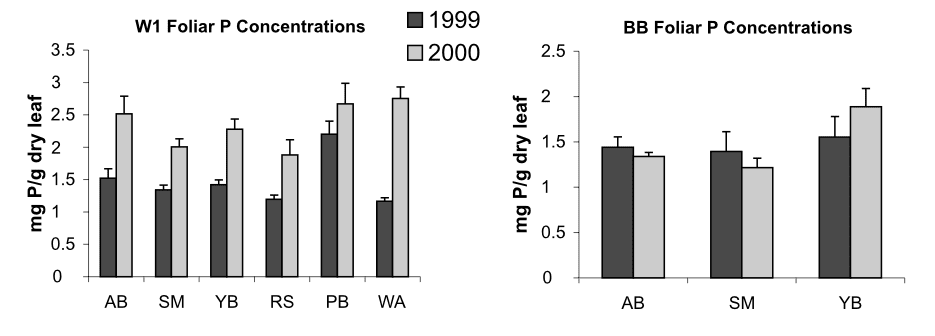
No immediate (i.e. first year) response of streamwater P concentrations was reported in the WS1 Ca experiment (Fiorentino et al. 2003), and long-term observations indicate concentrations of soluble reactive P have been at or near detection limits in both WS6 and WS1. However, we expect that decreased adsorption and fixation of P by sesquioxides would result from the gradual increase of pH in B horizon soil associated with Ca movement to mineral soil layers (Cho et al. 2012). Mechanistic studies of the response of secondary P mineral formation to changing pH in spodic B horizons is warranted.
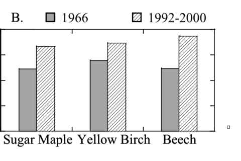
14.8 Nitrogen deposition and colimitation
As noted at the outset, temperate forests growing on glacially-derived soils are expected to be more limited by N than P because of the presence of easily weathered P minerals in the rooting zone of these younger soils. However, decades of anthropogenic N deposition might be expected to induce transactional P limitation (Vitousek et al. 2010). Indeed, a meta-analysis of fertilization studies in eastern deciduous forests (Vadeboncoeur 2010) suggested that both N and P are commonly limiting forest production. Long-term observations from HB indicate that foliar N:P ratios increased between the 1960s and 1990s (Figure 14.10). Moreover, foliar N:P ratios indicate NP colimitation for a suite of northern hardwood stands in and around HBEF (Figure 14.11; Gonzalez et al. 2023). Five years of relatively low-level addition of N (30 kg N/ha-yr) to these stands resulted in foliar N:P ratios suggestive of P limitation (Figure 14.11), and low-level P additions (10 kg P/ha-yr) caused significant increases in tree growth (Figure 14.12) whereas no response to N additions was observed (Goswami et al. 2018). Moreover, P additions induced a significant decline of foliar P resorption, further suggesting P limitation in untreated plots.
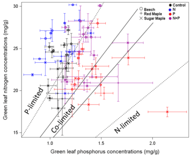
Anthropogenic N deposition has declined markedly in the early 21st century in eastern North America as a result of pollution control (see Nitrogen Cycling chapter). How N deposition-induced transactional P limitation might respond to decreasing anthropogenic N inputs is unknown. Recent studies at HB indicate some of the key mechanisms that could contribute to this response. For example, See et al. (2013) observed that P resorption increased with soil N content (Figure 14.13), implying that trees more efficiently conserve P when higher N supply induces greater P limitation. Similarly, soil phosphatase activity was higher where soil N availability was high (Figure 14.14; Ratliff and Fisk 2016). These interactions between the cycling of P and N highlight the need to understand multiple nutrient interactions when evaluating likely responses of forests to changing environmental conditions.
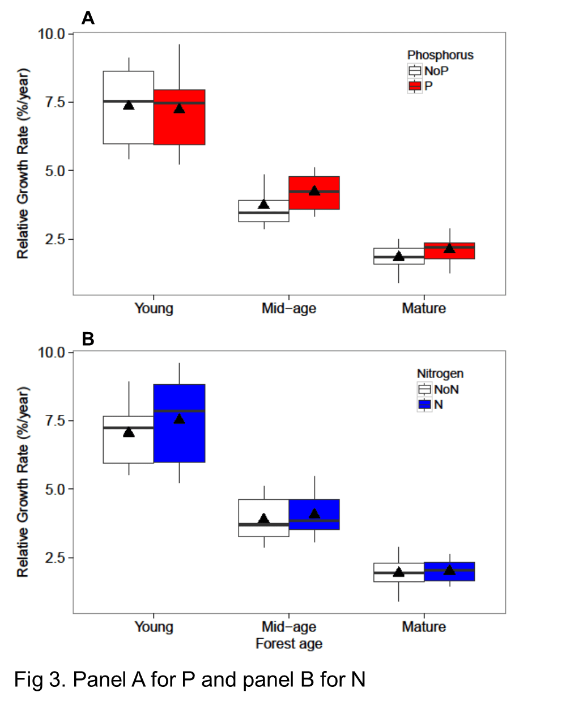
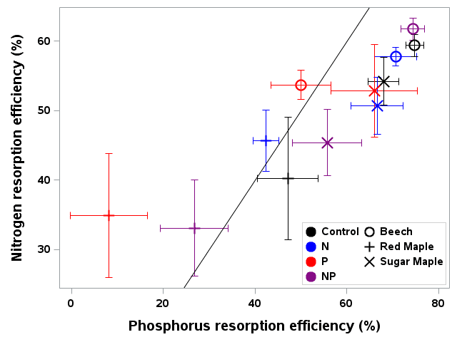

14.9 Questions for Further Study
- Does biologically-enhanced weathering of P from primary minerals respond to changes in ecosystem P availability?
- What proportion of particulate P deposition is new input vs local recycling of forest P?
- How do changes in soil pH affect microbial mineralization of organic P and adsorption and fixation of P in secondary soil minerals?
- What is the nature of competition for P between ectomycorrhizae and arbuscular mycorrhizae?
- What is the physiology of foliar P resorption and how is it coupled mechanistically to N resorption?
14.10 References
Blum, J. D., Klaue, A., Nezat, C. A., Driscoll, C. T., Johnson, C. E., Siccama, T. G., Eagar, C., Fahey, T. J., & Likens, G. E. (2002). Mycorrhizal weathering of apatite as an important calcium source in base-poor forest ecosystems. Nature, 417, 729–731. https://doi.org/10.1038/nature00801
Bormann, F. H., Likens, G. E., Siccama, T. G., Pierce, R. S., & Eaton, J. S. (1974). The export of nutrients and recovery of stable conditions following deforestation at Hubbard Brook. Ecological Monographs, 44(3), 255–277. https://doi.org/10.2307/1942311
Carreiro, M. M., Sinsabaugh, R. L., Repert, D. A., & Parkhurst, D. F. (2000). Microbial enzyme shifts explain litter decay responses to simulated nitrogen deposition. Ecology, 81(9), 2359–2365. https://doi.org/10.1890/0012-9658(2000)081[2359:MESLDR]2.0.CO;2
Cho, Y., Driscoll, C. T., Johnson, C. E., Blum, J. D., & Fahey, T. J. (2012). Watershed-level responses to calcium silicate treatment in a northern hardwood forest. Ecosystems, 15(3), 416–434. https://doi.org/10.1007/s10021-012-9522-6
Fiorentino, I., Fahey, T. J., Groffman, P. M., Driscoll, C. T., Eagar, C., & Siccama, T. G. (2003). Initial responses of phosphorus biogeochemistry to calcium addition. Canadian Journal of Forest Research, 33(10), 1864–1873. https://doi.org/10.1139/x03-112
George, E., Marschner, H., & Jakobsen, I. (1995). Role of arbuscular mycorrhizal fungi in uptake of phosphorus and nitrogen. Critical Reviews in Biotechnology, 15(3–4), 257–270. https://doi.org/10.3109/07388559509147412
Gonzales, K. E., Yanai, R. D., Fahey, T. J., & Fisk, M. C. (2023). Evidence for P limitation in eight northern hardwood stands. Forest Ecology and Management, 529, 120696. https://doi.org/10.1016/j.foreco.2022.120696
Gonzales, K., & Yanai, R. (2019). Nitrogen–phosphorus interactions in young northern hardwoods indicate P limitation. Oecologia, 189(3), 829–840. https://doi.org/10.1007/s00442-018-4314-0
Gordon, W. S., & Jackson, R. B. (2000). Nutrient concentrations in fine roots. Ecology, 81(1), 275–280. https://doi.org/10.1890/0012-9658(2000)081[0275:NCIFR]2.0.CO;2
Goswami, S., Fisk, M. C., Vadeboncoeur, M. A., Garrison-Johnston, M., Yanai, R. D., & Fahey, T. J. (2018). Phosphorus limitation of aboveground production. Ecology, 99(2), 438–449. https://doi.org/10.1002/ecy.2093
Gosz, J. R., Likens, G. E., & Bormann, F. H. (1972). Element turnover rates at Hubbard Brook. Bulletin of the Ecological Society of America, 53(2), 32.
Groffman, P. M., & Fisk, M. C. (2011). Phosphate additions have no effect on microbial biomass. Soil Biology and Biochemistry, 43(12), 2441–2449. https://doi.org/10.1016/j.soilbio.2011.08.003
Koide, R. T., & Kabir, Z. (2000). Extraradical hyphae hydrolyse organic phosphate. New Phytologist, 148(3), 511–517. https://doi.org/10.1046/j.1469-8137.2000.00778.x
Likens, G. E. (2013). Biogeochemistry of a forested ecosystem (3rd ed.). Springer.
Likens, G. E., Bormann, F. H., Pierce, R. S., Eaton, J. S., & Johnson, N. M. (1977). Biogeochemistry of a forested watershed. Springer.
Nezat, C. A., Blum, J. D., Klaue, A., Johnson, C. E., & Siccama, T. G. (2004). Influence of landscape position on weathering rates. Geochimica et Cosmochimica Acta, 68(14), 3065–3078. https://doi.org/10.1016/j.gca.2004.01.007
Parfitt, R. L., & Atkinson, R. J. (1976). Phosphate adsorption on goethite. Nature, 264, 740–742. https://doi.org/10.1038/264740a0
Rastetter, E. B., Yanai, R. D., Thomas, R. Q., Vadeboncoeur, M. A., Fahey, T. J., Fisk, M. C., Kwiatkowski, B. L., & Hamburg, S. P. (2013). Recovery from disturbance requires resynchronization of nutrient cycles. Ecological Applications, 23(3), 621–642. https://doi.org/10.1890/12-0751.1
Ratliff, T. J., & Fisk, M. C. (2016). Phosphatase activity related to N availability. Soil Biology and Biochemistry, 94, 61–69. https://doi.org/10.1016/j.soilbio.2015.11.012
Ryan, D. F., & Bormann, F. H. (1982). Nutrient resorption in northern hardwood forests. BioScience, 32(1), 29–32. https://doi.org/10.2307/1308539
See, C. R., Yanai, R. D., Fisk, M. C., Vadeboncoeur, M. A., Quintero, B. A., & Fahey, T. J. (2015). Soil nitrogen affects phosphorus recycling. Ecology, 96(9), 2488–2498. https://doi.org/10.1890/14-1994.1
Tipping, E., Benham, S., Boyle, J. F., Crow, P., Davies, J., Fischer, U., & Monteith, D. T. (2014). Atmospheric deposition of phosphorus. Environmental Science: Processes & Impacts, 16(7), 1608–1617. https://doi.org/10.1039/c3em00641g
Vadeboncoeur, M. A. (2010). Multiple limiting nutrients in northeastern forests. Canadian Journal of Forest Research, 40(9), 1766–1780. https://doi.org/10.1139/X10-127
Vitousek, P. M., Porder, S., Houlton, B. Z., & Chadwick, O. A. (2010). Terrestrial phosphorus limitation. Ecological Applications, 20(1), 5–15. https://doi.org/10.1890/08-0127.1
Walker, T. W., & Syers, J. K. (1976). The fate of phosphorus during pedogenesis. Geoderma, 15(1), 1–19. https://doi.org/10.1016/0016-7061(76)90066-5
Wood, T., Bormann, F. H., & Voigt, G. K. (1984). Phosphorus cycling in a northern hardwood forest. Science, 223, 391–394. https://doi.org/10.1126/science.223.4634.391
Yanai, R. D. (1991). Soil solution phosphorus dynamics. Soil Science Society of America Journal, 55(6), 1746–1752. https://doi.org/10.2136/sssaj1991.03615995005500060039x
Yanai, R. D. (1992). Phosphorus budget of a northern hardwood forest. Biogeochemistry, 17(1), 1–22. https://doi.org/10.1007/BF00002760
Yanai, R. D. (1998). Effects of whole-tree harvest on phosphorus cycling. Forest Ecology and Management, 104(1–3), 281–295. https://doi.org/10.1016/S0378-1127(97)00235-6